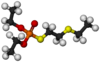

demeton

Definition: Demeton, sold as an amber oily liquid with a sulphur like odour under the name Systox™, is an organophosphate derivative causing irritability and shortness of breath to individuals repeatedly exposed. It was used as a phosphorothioate insecticide and acaricide and has the chemical formula C8H19O3PS2. Although it was previously used as an insecticide, it is now largely obsolete due to its relatively high toxicity to humans. Demeton consists of two components, demeton-S and demeton-O in a ratio of approximately 2:1 respectively. The chemical structure of demeton is closely related to military nerve agents such as VX and a derivative with one of the ethoxy groups replaced by methyl was investigated by both the US and Soviet chemical-weapons programs under the names V.sub.X and GD-7.
Source: Wikipedia
Wikipedia Page (Something wrong with this association? Let us know.)
Wikidata Page (Something wrong with this association? Let us know.)